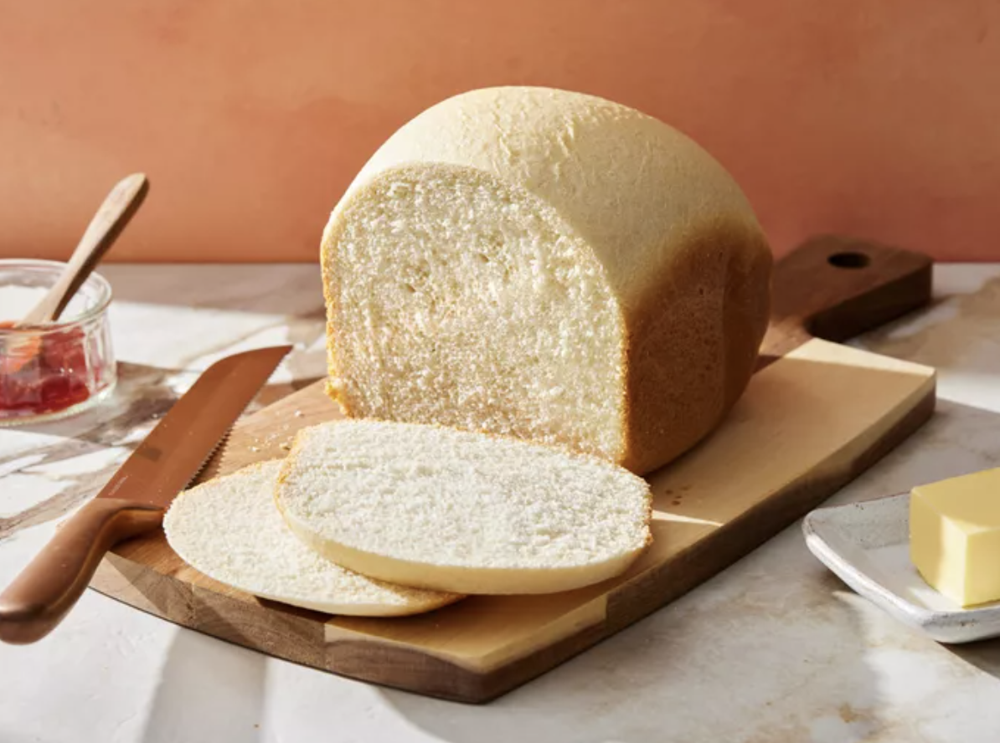

Bread

Source:
source
Description
Bread machine white bread. Plain, simple, gets the job done, and tastes great.
Ingredients
- 1 cup warm water (110 degrees F/45 degrees C)
- 3 tablespoons white sugar
- 3 tablespoons vegetable oil
- 1 ½ teaspoons salt
- 3 cups bread flour
- 2 ¼ teaspoons active dry yeast
Steps
- Gather all ingredients.
- Place water, sugar, oil, salt, bread flour, and yeast into the pan of the bread machine (or in the order recommended by your bread machine manufacturer).
- Bake on White Bread setting.
- Use oven mitts to carefully remove the bread pan from the machine.
- Remove bread from the pan and let cool completely on a wire rack before slicing.
Return to the previous page.